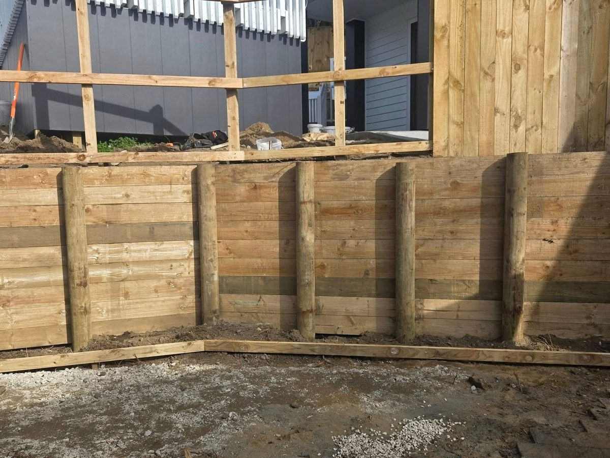

Most sections here have a bank somewhere.
Behind the house, beside the driveway, or under the lawn you'd like to be flat. A good wall gives you usable ground back. A bad one leans, bulges and ends up costing you twice.
From Tawa to Titahi Bay, the ground is mostly clay on a slope, and clay holds water. Water is what pushes walls over. So every wall we build starts with what goes behind it, not the timber you see out front. Because we own the diggers and trucks, the dig-out, cartage and backfill are done by the same crew that builds the wall.
Timber, concrete, block or crib.
The right wall depends on height, what it's holding up, the look you want and the budget. We'll price more than one option where it makes sense.
Drainage is what keeps a wall standing.
Water pressure behind a wall is the main reason walls fail. This is what we put behind every one, whatever it's made of.
Do you need consent for your wall?
Short answer: it depends on height and what's above it. We tell you which camp you're in at the site visit, before you spend anything.
- Up to 1.5 m, with no surcharge: exempt. A wall retaining 1.5 m of ground or less, with nothing loading it from above, doesn't need building consent. It still has to meet the Building Code, drainage included.
- Over 1.5 m, or surcharged: consent and an engineer. A surcharge is a driveway, building, pool, another wall or sloping ground above the wall. Any of those, or more than 1.5 m retained, and you need building consent and normally an engineer's design. We build to that design.
- Wellington City: resource consent may apply too. Wellington City Council says a wall near a boundary or over 2.5 m high may need resource consent, on top of building consent.
From bank to finished wall.
Site visit & levels
Adam checks height, slope, soil, access and what's above the wall, and talks through consent.
Dig out & cart
Our digger cuts the bank back and our truck carts the spoil, so there's no waiting on another contractor.
Posts, rails, drainage
Posts set and concreted, rails or blocks up, drainage coil, scoria and filter cloth in behind.
Backfill & tidy
Backfilled, compacted and finished. Site cleaned and a final walk-through with you.
What a retaining wall costs in Wellington.
Height, access, how much soil comes out and whether it needs an engineer are what move the price.
- Per m² of wall face, H5 posts, H4 rails
- Drainage adds $50–150/m²
- Up to about 6 m long, 1 m high
- Roughly $540–1,350 per linear metre
- Typically around $990/m²
- Over 1.5 m, or carrying a load
- Depends on height and loads
- Options priced side by side
Indicative Wellington-region ranges for 2026, GST inclusive. Not a quote. Access, slope, what has to come out first and the finish you pick all move the number. Your written quote is fixed.
Walls we've built lately.

Photo · 1.4 m timber wall, Tawa Photo · Drainage coil & scoria
Photo · Drainage coil & scoria Photo · Block wall, Whitby
Photo · Block wall, Whitby